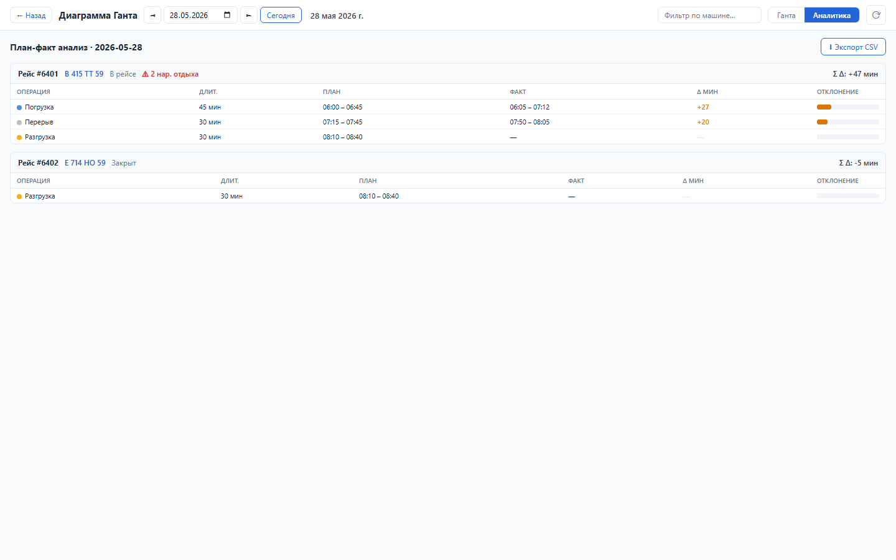
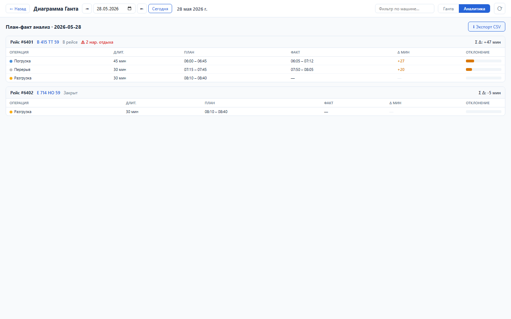

Зачем этот блок
План-факт показывает, где транспортный процесс расходится с нормативом: погрузка, ожидание, отдых, разгрузка. Руководитель видит системные задержки и может менять процесс или нормативы.
Вход
Плановые и фактические времена операций рейса.
Плановые и фактические времена операций рейса.
Процесс
Расчет дельт, подсветка отклонений, контроль нарушений отдыха.
Расчет дельт, подсветка отклонений, контроль нарушений отдыха.
Результат
Сводка по рейсам, таблица операций и CSV для разбора.
Сводка по рейсам, таблица операций и CSV для разбора.
Структура данных
| Объект | Поля | Назначение |
|---|---|---|
| Рейс | tt_id, vehicle, status, total_delta_min, rest_violations | Сводка исполнения. |
| Операция | duration_min, plan_start/end, fact_start/end, delta_min | План-факт по шагу рейса. |
Как работать



Бизнес-процессы
- Фиксация факта: операции получают фактическое начало/окончание.
- Контроль исполнения: система считает дельты по операциям и суммарно по рейсу.
- Контроль отдыха: нарушения режима отдыха поднимаются в строку рейса.
- Разбор причин: диспетчер/руководитель смотрит повторяющиеся задержки и корректирует процесс.
- Выгрузка: CSV используется как доказательная таблица для анализа.
Результат проверки
Sprint 14 закрыт функционально: backend tests 7 passed, UI smoke passed, load NFR passed. Проверены план-факт API, таблица аналитики, нарушения отдыха, бары отклонений и CSV export.